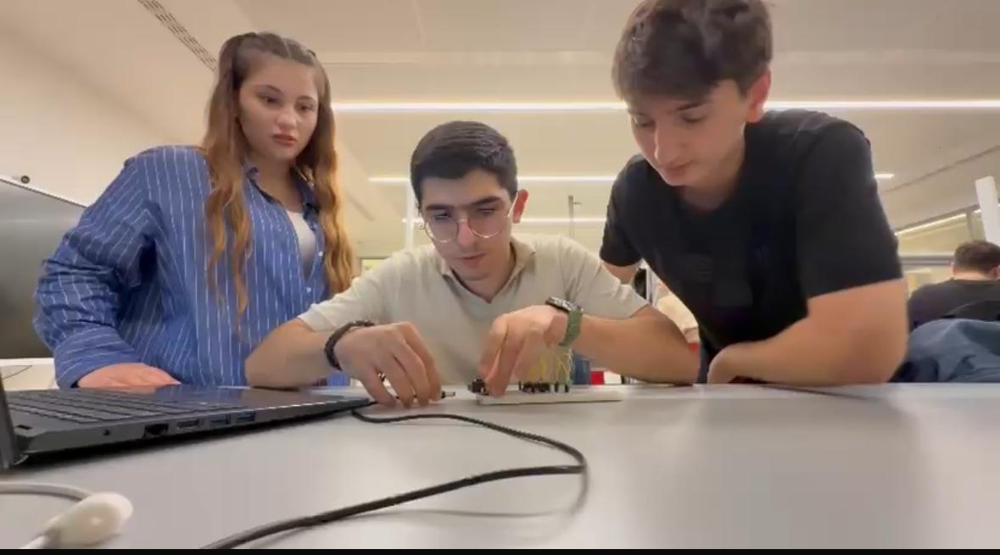
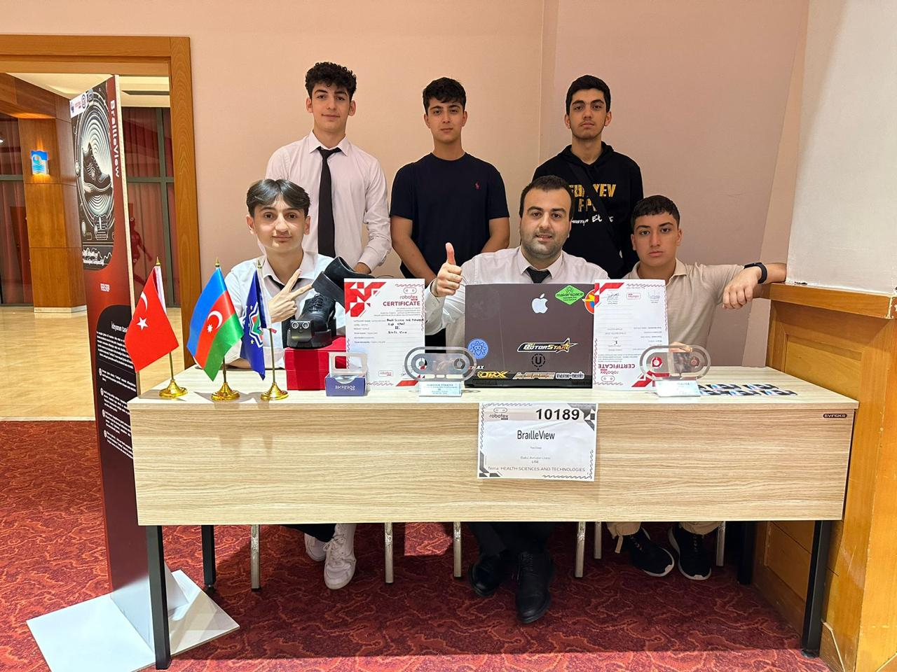
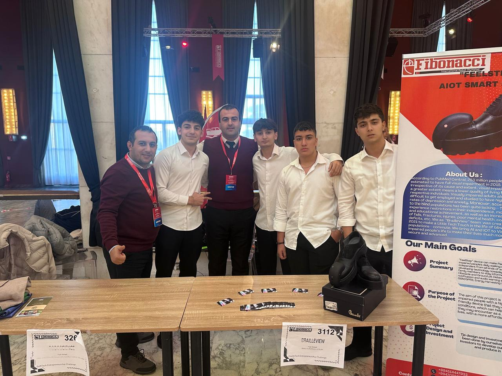

Projects
Below are five projects that reflect my course work and activities. The first three are part of Principles of Information Systems work.
Principles of Information Systems — Personal Portfolio Website

I created a personal portfolio website to present course work and small projects. The site includes Home, About, and Projects pages with clear navigation and a responsive layout for phones and tablets.
Skills used: HTML, CSS, responsive design, content writing.
HTMLCSSResponsive
Principles of Information Systems — Logic Gates & Digital Circuits

In this group assignment we studied logic gates and built simple digital circuit examples. Our team members met for the first time and we organised tasks, tested small simulations, and explained results in a short report.
Skills used: basic digital logic, teamwork, documentation.
Digital LogicTeamwork
Principles of Information Systems — Hour of AI Community Visit

As part of class work, our group visited a regional school to teach simple AI ideas. We planned short lessons and interactive examples so children could try basic activities and learn the idea behind AI models.
Skills used: teaching, lesson planning, community outreach.
TeachingOutreach
FeelStep — Smart Shoe V1 and 2 (Robotex Olympiad) - Baku and Antalya

FeelStep is a student project to help visually impaired people using sensors and feedback. I worked with a team to prepare a demo and presentation for the semi-final of the Robotex Olympiad that held in Turkiye, Antalya. That is why we presented the project in Baku and we passed to the next stage. We went to Turkiye in April. The photo is from Antalya with my teammates. We were chosen as a second place
Skills used: project planning, teamwork, presentation.
PlanningPresentation
FeelStep — Smart Shoe V3 (Fibonacci Olympiad) - Rome

It was our third version of the FeelStep project, presented at the Fibonacci Olympiad in Rome (2024, November). This version included improved sensor integration and a more refined user interface. We came back with Jury Special Award from Rome.
Skills used: In this project, I coordinated team efforts, communicated with stakeholders, and managed the presentation process. Here, my role was mostly lead the team and ensure all components were well-integrated and presented effectively.
CoordinationCommunication
Other team projects
Other team-based activities include additional course assignments and community work that taught me practical skills in teamwork and teaching.